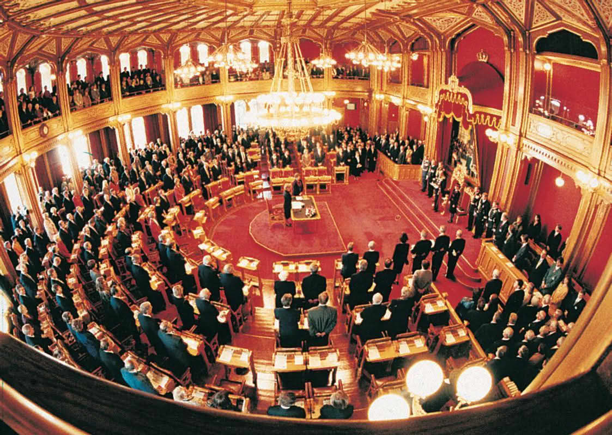
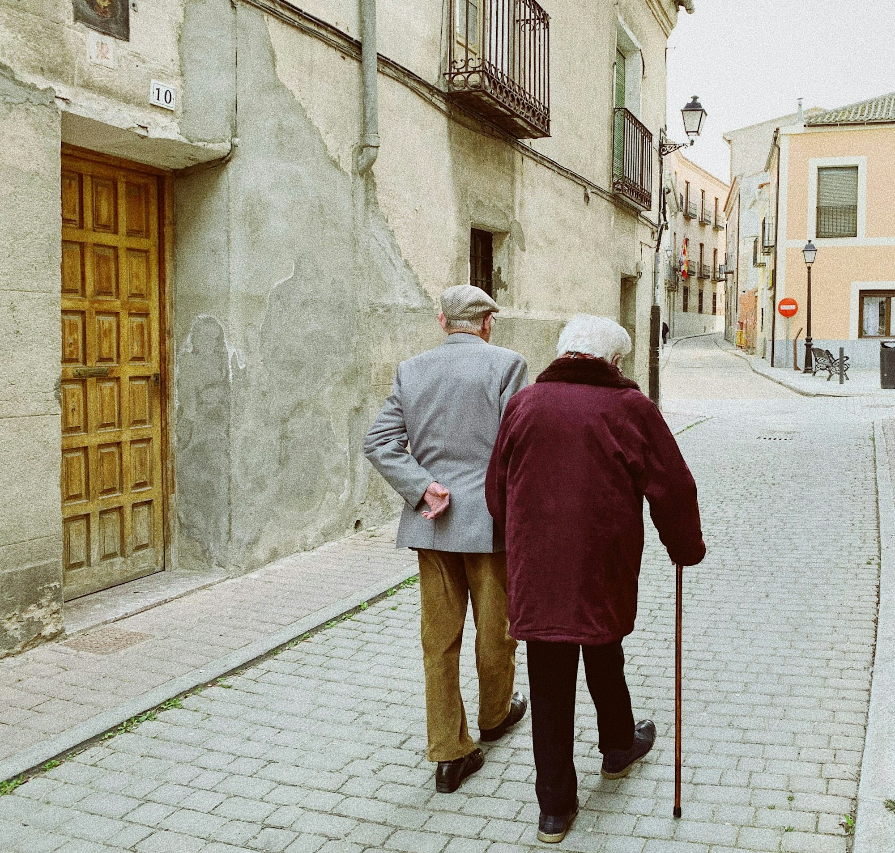

Program høsten 2026
Eventuelle endringer i programmet blir markert i rødt.

25. august
Koieliv og eneboere i skogen
Folkeminnegransker og forfatter Thor Gotaas forteller hvorfor noen velger ensomheten i ei lita koie.
1. september
Norge - et demokrati
Når ble Norge et demokrati, og hva er avgjørende for å bevare det? Mona Ringvej, historiker og forfatter, gir svar og perspektiver.


15. september
Aktuelt om midtøsten
Geir O. Pedersen, tidligere norsk FN-ambassadør og FNs spesialutsending i Syria og Midtøsten, gir et skarpt og oppdatert bilde av situasjonen i Midtøsten. Den videre utviklingen frem mot september vil ha stor betydning for hvilke temaer som står sentralt i foredraget.
6. oktober
Aldringens forunderligheter, vemod og gleder
Men livet lever! Inge Eidsvåg, tidligere rektor ved Nansenskolen, forfatter og kåsør, gir et varmt og tankevekkende møte med aldringens forunderligheter

20. oktober
EU som økonomisk stormakt - og Norges rolle i et nytt maktbilde
Kan EUs indre marked utvikle seg til en ny vekstmotor i konkurransen med Kina og USA - og hvilken rolle kan Norge spille i dette bildet? Stein Reegård, tidligere statssekretær og sjeføkonom i LO, gir innsikt i de store økonomiske linjene og hva de betyr for Norge.
3. november
Verden etter mellomvalget i USA
Mellomvalget i USA 3. november kan få stor betydning for både amerikansk politikk og globale utviklingstrekk. Helge Simonnes, tidligere sjefredaktør i Vårt Land og forfatter, gir en innsiktsfull analyse av hva resultatet kan innebære for USA og verden.
17. november
Nytt stormaktsspill i Latin-Amerika
Røverimperialismen: Med Trump på tokt i Latin-Amerika. Benedicte Bull, professor i latinamerikastudier, belyser utviklingen.